reseaux sociaux
Black Mirror - Chute Libre S03EP01 commenté
“La Mythocritique transhumanisme dans NoseDive (S3E1 - Black Mirror)”. Intervention proposée dans le cadre du 11ème Colloque International “Beyond Humanism”, à l’Université Catholique de Lille, le 12 juillet 2019.
Definition d’un reseau social
Ca sert à…
Les reseaux sociaux sont des applications qui servent à créer des « communautés ». Il permettent aux usagers d’utiliser un compte public ou privé. Il permet de communiquer de manière instantanée, et se substituent peu à peu aux autres formes de communications par voie électronique (mails…).
L’emergence des reseaux sociaux vient de l’apparition des premiers smartphones, qui ont permis de nouveaux services grâce au partage de photo, video, medias…
Les réseaux sociaux combinent trois fonctions fondamentales :
- support de l’identité numérique ;
- moyen de sociabilité sur la base de critères d’affinité ;
- média réticulaire de communication interpersonnelle et/ou intergroupe.
- moyen de se distraire
Au démarrage: il faut créer un compte, le paramétrer. Il est conseillé de limiter la portée des données personnelles publiques lors de ce paramétrage. Par exemple, bloquer la lecture de votre liste d’amis, ne pas rendre votre mail et numero de telephone accessible à tous.
L’activité sur le réseau social va aussi construire une identité numérique. Il est recommandé d’avoir une certaine hygienne sociale avec son activité sur les reseaux.
identité numérique
L’identité numérique est de son côté le lien entre une personne et ses informations virtuelles, pouvant être trouvées par le biais d’une simple recherche sur Internet. Cette identité est multiple: la personnalité que vous construisez est différente selon le reseau social utilisé et la manière avec laquelle vous l’utilisez.
Toute activité sur le Web implique la création de traces. Certaines sont volontaires, d’autres involontaires. Elles sont collectées, partagées entre applications et stockées dans des bases de données. Leur addition construit l’identité numérique de chacun.
e-reputation
La e-reputation est due à l’identité numérique que l’on se construit, mais aussi par ce qu’en disent les autres.
La e-réputation a tendance à définir, aux yeux des autres, ce que vous êtes, selon la manière dont on parlera de vous, positivement ou négativement. Cette notoriété Internet peut pencher d’un côté comme de l’autre, en tout cas elle sera très représentative de la manière dont on vous percevra, qui que vous soyez.
Les sites de vente en ligne permettent aux usagers d’être egalement vendeurs. La reputation du vendeur (et de l’acheteur) se construit au fil de ses transactions, grâce aux notes obtenues.
Viralité: Avec les reseaux sociaux, la propagation d’une information, surtout si elle est sensationnelle, se fait très facilement, à une très grande echelle. Cette propagation explosive vient de la manière avec laquelle les usagers sont en relation. C’est ce mécanisme qui agrave les problèmes de cyberharcelement.
Modelisation d’un reseau social
Documents issus des pages:
Pour comprendre comment se propagent les informations, on a cherché un moyen de représenter visuellement l’organisation du réseau social. D’où l’utilisation des graphes.
Dans un réseau du genre de « Facebook », où l’amitié est une relation symétrique, on va donc représenter chaque personne par une bulle (les sommets du graphe) et chaque relation par un lien entre deux bulles (les arêtes du graphes).
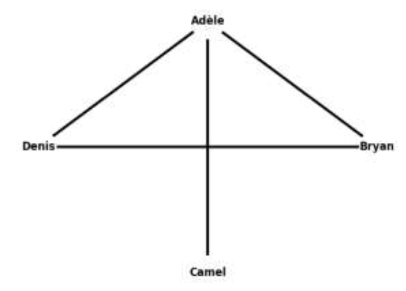
Utiliser une représentation visuelle: le graphe
Graphe non orienté
A faire soi-même :
- Construire le graphe de relations amicales (type Facebook) du petit groupe suivant :
- Ashley est amie avec Benoit, Dido et Ela
- Benoit est ami avec tout le monde
- Cédric est ami avec Benoit et Ela
- Dido est ami avec Ashley et Benoit
- Ela est amie avec Ashley, Benoit et Cédric
- Déterminer quelle est la personne la plus influente dans ce réseau
- Quel chemin va emprunter une publication, systématique re-publiée, pour parvenir de Denis à Camel?
Corrections : 3 visualisations de la même situation
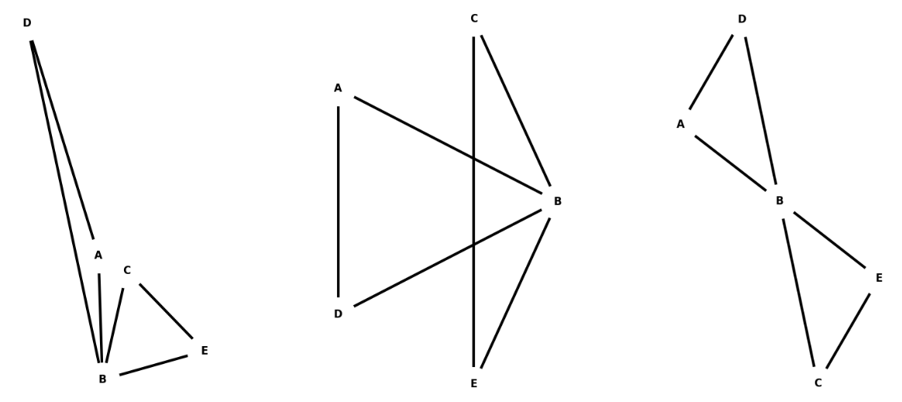
Seule la 3e visualisation montre clairement que Benoit est l’élément central de ce graphe. On verra plus loin que la seule représentation visuelle ne permet pas toujours de faire des mesures sur le graphe. Il faudra la plupart du temps utiliser un algorithme.
Graphe orienté
Dans un réseau social comme « X, ex-Twitter », il s’agit de s’abonner à quelqu’un pour suivre ses publications. La relation est à sens unique, si vous suivez quelqu’un cette personne ne vous suit pas forcement.
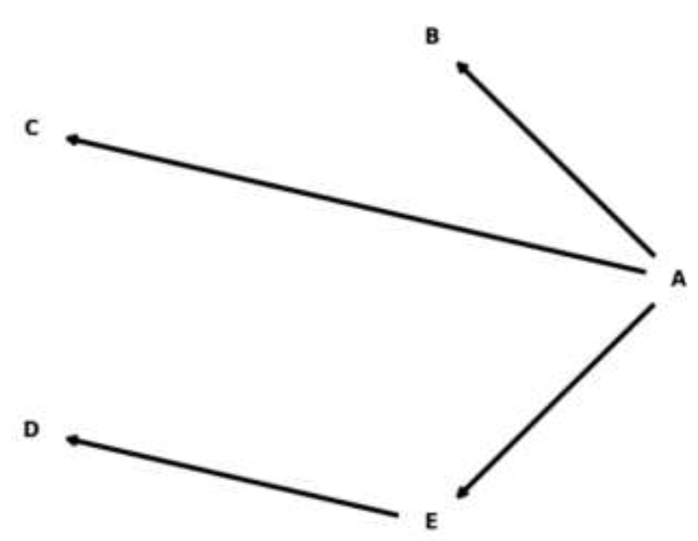
La flèche traduit alors une relation. Cela peut être, au choix:
- suit …
- est suivi par…
De tels graphes permettent ainsi aux sites de réseaux sociaux de vous proposer de nouveaux contacts, lieux ou autres en fonction de vos envies et de vos connaissances.
Exemple:
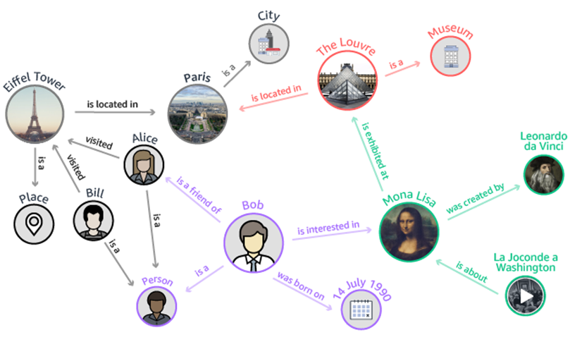
- D’après le diagramme précédent, quelle visite pourrait-on conseiller à Bob ?
- Supposons que Bill et Alice visitent la tour Eiffel en même temps, et que leurs données de géolocalisation sont partagées avec l’application de reseau social. Que pourrait faire l’appli?
Mesures sur un graphe
Pour le graphe non orienté suivant, comportant une centaine de sommets, on établit 2 représentations:
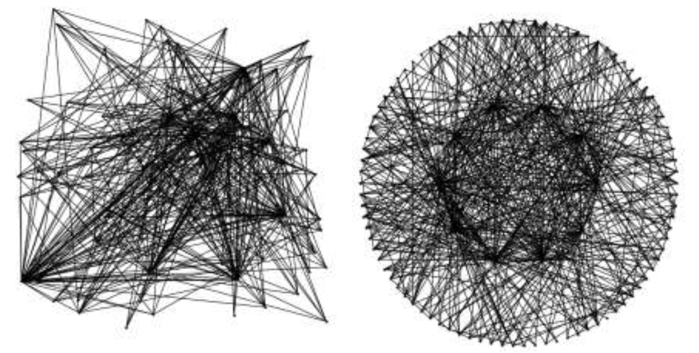
a gauche: graphe non organisé, a droite: organisé
Le graphe de droite est organisé en plaçant tous les sommets sur une couronne.
Le graphe de gauche montre que certains sommets sont plus connectés que d’autres. A droite, ces mêmes sommets sont répartis régulièrement sur la couronne.
- Repérer ces sommets particuliers sur chacun des 2 graphes
- Quel est la signification de ces connexions plus nombreuses pour certains sommets?
On donne 2 représentations d’un nouveau reseau:
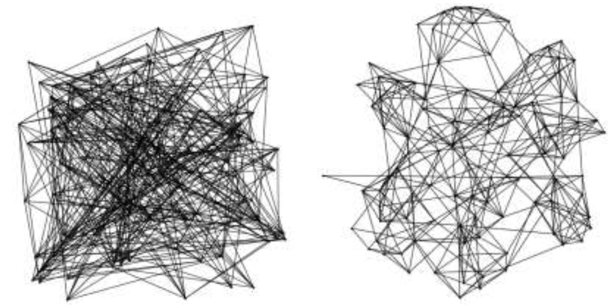
- Que fait apparaître cette organisation des sommets?
- Quelle peut être la conséquence de ces regroupements sur les réseaux sociaux, et dans un contexte élargi : à la vie offline?
Definitions
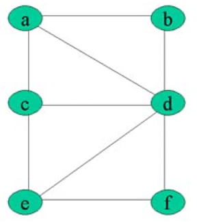
L’écartement d’un sommet est la distance maximale existant entre ce sommet et les autres sommets du graphe. Pour le sommet a, la plus grande distance avec un autre sommet est 2. L’écartement est donc de 2.
Le centre d’un graphe est le sommet d’écartement minimal (le centre n’est pas nécessairement unique). Ci-contre, tous les sommets ont un écartement de 2, sauf d qui a un écartement de 1. Le centre est donc d.
Le rayon d’un graphe G est l’écartement d’un centre du graphe. Ici d est le centre et d a un écartement de 1. Donc le rayon est de 1
Le diamètre d’un graphe est la distance maximale entre deux sommets du graphe. Ici le diamètre est de 2.
Le degré d’un sommet est le nombre de sommets qui lui sont connectés. Il s’agit du nombre d’amis.
Le rayon et les centres du graphe vont permettre d’identifier les presonnes les plus influentes du reseau.
A vous de jouer. Pour simplifier, imaginons un réseau social ne possédant que 7 abonnés :
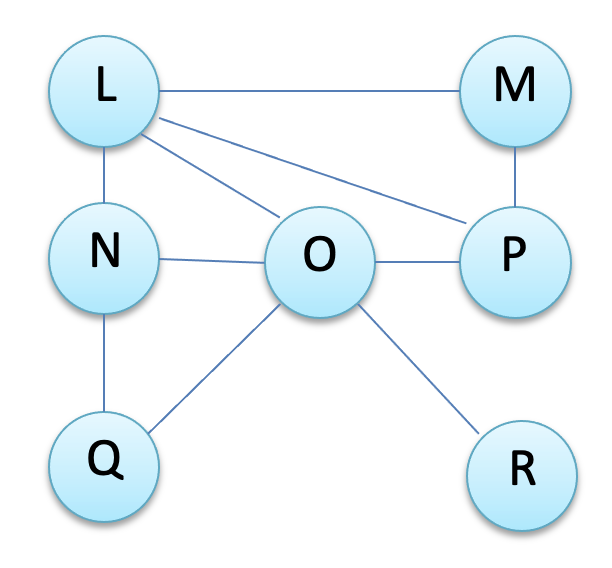
- Déterminez-le (ou les) centre(s) du graphe ci-contre.
- En déduire le rayon du graphe.
- Déterminer le diamètre du graphe.
- Représenter les relations d’amitié dans un tableau
| L | M | N | O | P | Q | R |
|---|---|---|---|---|---|---|
| M | ||||||
| N | ||||||
| O | ||||||
| P | ||||||
| Q | ||||||
| R |
Ce tableau, permet-il de repondre plus facilement aux 3 premieres questions?
Experience de Milgram
Milgram envoie soixante lettres à des recrues de la ville d’Omaha dans le Nebraska. Il leur demande de faire suivre cette lettre à un agent de change, vivant à une adresse fournie, dans la ville de Sharon dans le Massachusetts. Les participants pouvaient seulement passer les lettres, de main à main, à des connaissances personnelles qu’ils pensaient être capables d’atteindre l’objectif.
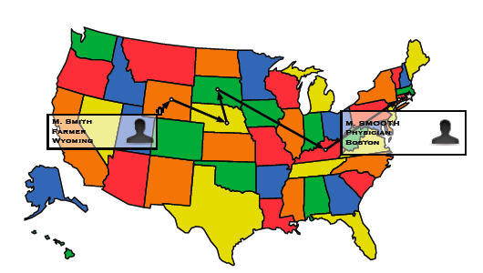
Le cas des influenceurs
Voir le paragraphe plus haut les mesures sur un graphe, et la recherche de centres.
Paradoxe des communautés
Quels éléments permettent aux algorithmes des réseaux sociaux de produire des clusters?
Véracité contre viralité, désinformation
Petits mondes
Sur le document suivant, on voit que les groupes à centre d’intérêt spécifique, ou communautaires peuvent avoir des liens fragiles entre-eux.
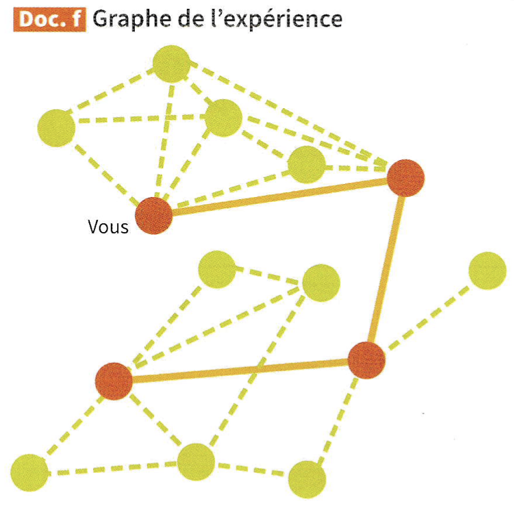
En 2015 à Bombey, en Inde, le gouvernement a interdit la consommation de viande. La situation a fait polemique dans le pays et notamment sur Twitter, où le hashtag
#BeefBara été largement repris.
Sur le document suivant, on a colorié en vert et en rouge les tweets pour et contre l’interdiction de la consommation de viande. On constate un lien étroit entre les opinions et l’appartenance à une communauté. extrait du livre Delagrave SNT p135.
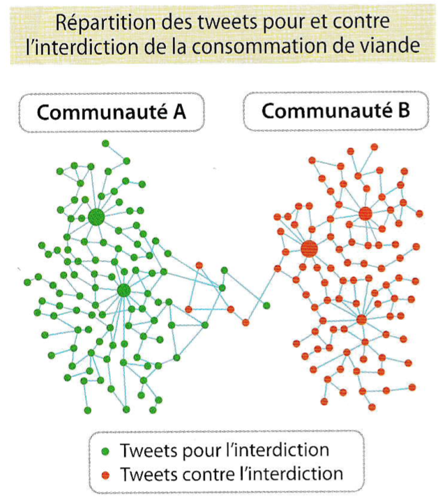
Aspects économiques et controverses
Victimes des algorithmes. L’usager d’un reseau social est soumis, voire manipulé par les algorithmes de celui-ci.
Mais quels sont ces algorithmes au final? Et comment parviennent-ils à nous fournir un contenu personnalisé?…
Les reseaux sociaux parlent pour nous
La collecte de données personnelles est le ciment du modèle économique des réseaux sociaux. Au regard de ce que l’on vient d’apprendre, cela fonctionne comme un cercle vicieux :
- Plus l’on interagit sur les plateformes numériques, plus elles enregistrent nos données personnelles.
- Plus elles enregistrent nos données personnelles, plus elles personnalisent nos flux d’informations, en usant d’objets techniques liés à l’économie de l’attention.
- Plus nos flux d’informations sont personnalisés, confortables et rassurants, au détriment de ce qui se passe en dehors de ces chambres d’écho (bulle d’informations), plus nous passons de temps sur les plateformes numériques.
… et plus nous interagissons et produisons de données personnelles. Algorithmables, mémorisables, monétisables, profilables par les plateformes numériques.
Et cela déborde de la sphère économique pour empiéter dans la sphère psychologique…
C’est tellement vrai qu’aujourd’hui d’anciens responsables de Facebook dénoncent des pratiques qu’ils ont contribué à mettre en place. Diffusion de la vidéo “D’anciens responsables de Facebook alertent quant aux dangers des réseaux sociaux”.
Une journaliste parisienne inscrite sur un fameux site de rencontre a décidé de réclamer ses données personnelles auprès du site. Pour 1’équivalent d’une fréquentation de 4 années, el1e a reçu pas moins de 800 pages résumant les différents aspects de sa vie privée : ses « likes » sur Facebook, ses photos postées sur Instagram, ses diplômes universitaires, mais aussi ies dates, lieux et contenus de ses conversations… Que pourrait-il se passer dans le cas oit ces informations seraient divulguées ou revendues à une autre entreprise ?
Témoignage : elle réclame ses données et reçoit". " 800 pages ! D’après Libération
Addiction
Les reseaux sociaux peuvent repondre à un besoin de reconnaissance. Cela peut entrainer un comportement addictif dans leur usage, en multipliant les parutions ou autres activités (partage, like).
C’est à partir de ce constat que Beomseok Yang, réalisateur sud-coréen, a décidé de produire un court-métrage montrant l’addiction aux réseaux sociaux. Notamment chez les jeunes.
La vidéo, intitulée “Social Network”, nous permet de suivre la journée d’un jeune homme en mettant en avant toutes les interactions sociales qu’il a au cours de cette journée.
Beomseok Yang: SOCIAL NETWORK
Are You Living an Insta Lie? Social Media Vs. Reality
Les reseaux sociaux mettent en place des fonctionnalités addictives pour vous faire passer plus de temps sur leur plateforme. Il est prouvé que passer plus de 30 min par jour sur ces reseaux sociaux augmente l’anxiété et le sentiment de solitude.
De plus, l’utilisation d’appli tierces (jeux, quizz) constitue une menace pour nos données confidentielles, et renforcent le marketing ciblé dont on oeut faire l’objet.
Comprendre l’algorithme de recommandation
L’algorithme de Facebook, c’est comme au restaurant ! site academique ac-nantes > Ressource
Pour comprendre ce qui apparaît sur notre Newsfeed au moment où l’on se connecte à Facebook, on peut comparer l’algorithme du réseau social aux mécanismes qui nous permettent de choisir un menu au restaurant.
NOTA : ressource élaborée d’après l’article publié sur le site Le blog du modérateur, par Thomas Coëffé, le 27 octobre 2017.
Cyberviolence
Def:
-
la cyberviolence, c’est l’acte agressif et intentionnel perpétré par un individu ou un groupe d’individus au moyen de formes électroniques de communication.
-
le cyberharcelement consiste en des agissements malveillants répétés, dans un cadre public ou restreint, qui peuvent prendre différentes formes : intimidations, insultes, menaces, rumeurs, publication de photos ou vidéos compromettantes, etc.
Avec Ies spécificités du numérique, on ajoute un impact plus conséquent aux violences. En effet, les contenus offensants peuvent se répandre très rapidement grâce aux reseaux qui accelerent et grandissent l’échelle des échanges. D’autre part, le caractere anonyme des echanges favorise le sentiment d’impunité. Une certaine distance s’installe et diminue la capacité d’empathie ou la conscience de ses actes. Dans certains cas, il rend aussi difficile l’identification de l’auteur. Enfin, les cyberviolences n’ont pas de limite temporelle: elles laissent toujours une trace. Une fois diffusée sur la toile, on ne peux plus maitriser son cheminement.d’après un document de SNT Nathan p76
Droit pénal
Le fait de harceler une personne par des propos ou comportements répétés avantpour objet ou pour effet une dégradation de ses conditions de vie se traduisant par une altération de sa santé physique ou mentale est puni d’un an d’emprisonnement lorsque ces faits ont causé une incapacité totale de travai[ inférieure ou égale à huit jours. Ou et de 15 000 € d’amende si cela n’a entraîné aucune incapacité de travait. Article 222-33-2-2 du code penal
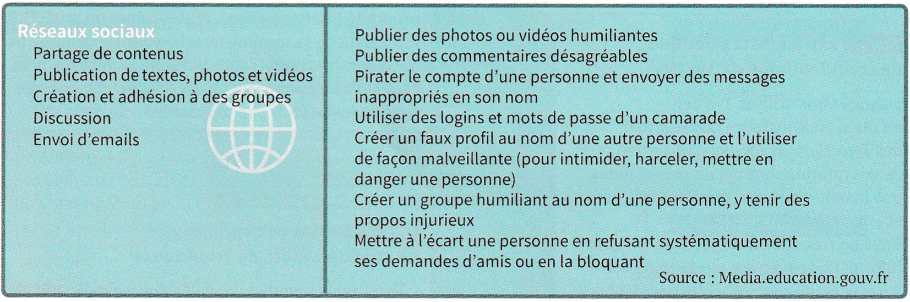
Typologie des Cyberviolences
Droit à l’oubli
grâce à l’arrêt de la Cour de justice de l’Union européeenne du 13 mai 2014, il est possible de réclamer le “droit à l’oubli”. Pour l’appliquer, il faut demander au site d’origine de supprimer les information outrageuese et au moteur de recherche de ne plus les référencer.
Liens
- Autre cours de SNT: jlrichter.fr
- Parcours sur les reseaux sociaux à base de videos: Lumni
- Kit atelier collège sur internet sans craintes
- Guide de prevention des cyberviolences en milieu scolaire: Lien vers le pdf
- fun video:
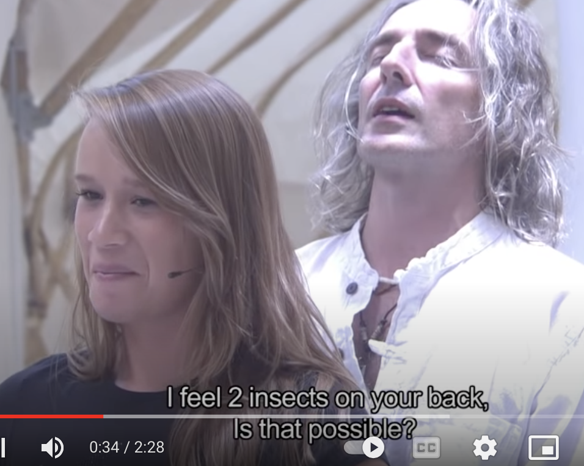
Amazing mind reader reveals his 'gift' - video - le mentaliste